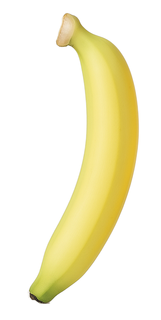
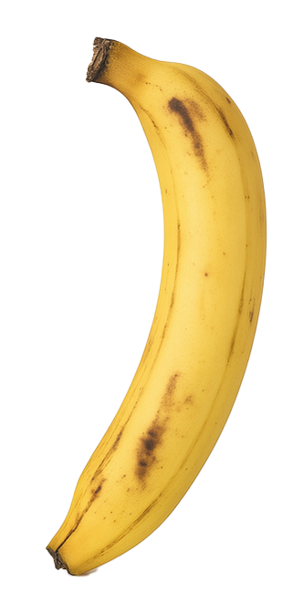

30
This is a banana timer. Select a banana that best represents the color of the banana you have. Then tap the big banana. Come back to this website to know if your banana is ripe or not. P.S. to reset, tap and hold the big banana.